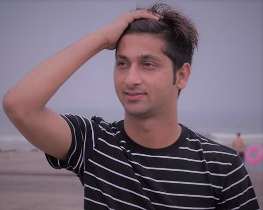

About me
| 項目 | 内容 |
|---|---|
| 名前 Name |
Narayan Ghimire |
| 学籍番号 Student Number |
AP 18010 | 生年月日 Date of birth |
1994年04月02日 |
| 原産国 country of origin |
NEPAL |
My hobby

Detail My Hobby. I'm Narayan Ghimire,from Syangja Nepal.now currently studying the network engineering in Japan.at azuma engineering collage japan. engineering study my hobby. through in about 45 minutes one way each day. But still fun business English, i have confidence in English,indian and nepali langagues. Usually, I’ll wake up at around 7 a.m. and immediately start my habit-stacking routine, which includes the following tasks: Making my bed Washing my face Drinking a pint of lemon water Preparing and drinking a nutritious smoothie (like this green juice product.) Reviewing my goals Writing down two to four important tasks for the day